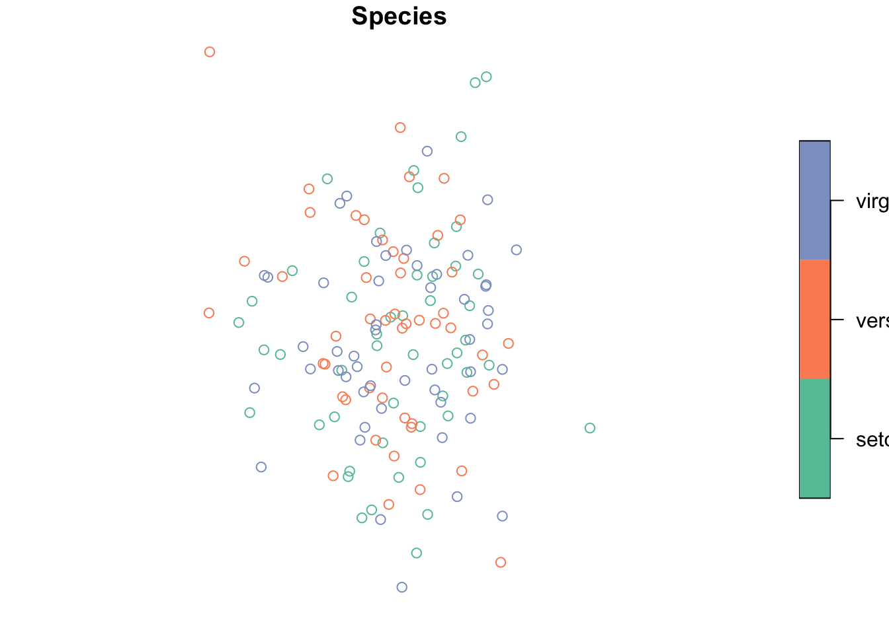

sf 3.4
今話題のsfパッケージ、まさか知らない人はいないでしょう??。
今回はじめて使いましたので、簡単にメモ。
library(dplyr)## Warning: パッケージ 'dplyr' はバージョン 3.4.2 の R の下で造られました##
## 次のパッケージを付け加えます: 'dplyr'## 以下のオブジェクトは 'package:stats' からマスクされています:
##
## filter, lag## 以下のオブジェクトは 'package:base' からマスクされています:
##
## intersect, setdiff, setequal, unionlibrary(sf)## Warning: パッケージ 'sf' はバージョン 3.4.4 の R の下で造られました## Linking to GEOS 3.6.1, GDAL 2.1.3, PROJ 4.9.3Shapeファイルからの読み込みの例が多かったので、
data.frameから作る場合をやってみます。
irisに適当に座標をつけます。
この場合はst_as_sf()で簡単に作ることができます。
SP*オブジェクトよりもスッキリしてる気がします。
iris_sf_wgs <- iris %>%
mutate(x = rnorm(dim(iris)[1],140,1),
y = rnorm(dim(iris)[1],35,1)) %>%
st_as_sf(coords = c("x","y"),
crs = 4326)
iris_sf_wgs %>%
head()## Simple feature collection with 6 features and 5 fields
## geometry type: POINT
## dimension: XY
## bbox: xmin: 139.9014 ymin: 33.78256 xmax: 141.0689 ymax: 36.03225
## epsg (SRID): 4326
## proj4string: +proj=longlat +datum=WGS84 +no_defs
## Sepal.Length Sepal.Width Petal.Length Petal.Width Species
## 1 5.1 3.5 1.4 0.2 setosa
## 2 4.9 3.0 1.4 0.2 setosa
## 3 4.7 3.2 1.3 0.2 setosa
## 4 4.6 3.1 1.5 0.2 setosa
## 5 5.0 3.6 1.4 0.2 setosa
## 6 5.4 3.9 1.7 0.4 setosa
## geometry
## 1 POINT (139.9014 36.03225)
## 2 POINT (140.7714 35.4193)
## 3 POINT (140.8326 34.3408)
## 4 POINT (141.0689 35.92047)
## 5 POINT (140.3208 33.78256)
## 6 POINT (140.4534 34.96536)geometryに座標が入りました。postGISみたいなやつですね。 投影変換はst_transformです。crsに直接EPSGコードをぶち込めます。
iris_sf_wgs %>%
st_transform(crs = 32654) %>%
head()## Simple feature collection with 6 features and 5 fields
## geometry type: POINT
## dimension: XY
## bbox: xmin: 401023.8 ymin: 3738254 xmax: 506214.9 ymax: 3988083
## epsg (SRID): 32654
## proj4string: +proj=utm +zone=54 +datum=WGS84 +units=m +no_defs
## Sepal.Length Sepal.Width Petal.Length Petal.Width Species
## 1 5.1 3.5 1.4 0.2 setosa
## 2 4.9 3.0 1.4 0.2 setosa
## 3 4.7 3.2 1.3 0.2 setosa
## 4 4.6 3.1 1.5 0.2 setosa
## 5 5.0 3.6 1.4 0.2 setosa
## 6 5.4 3.9 1.7 0.4 setosa
## geometry
## 1 POINT (401023.8 3988083)
## 2 POINT (479246.7 3919567)
## 3 POINT (484604.7 3799957)
## 4 POINT (506214.9 3975129)
## 5 POINT (437113.5 3738254)
## 6 POINT (450099.3 3869338)plotでの描画はこの通り。
plot(iris_sf_wgs %>% select(Species))
ggplotで扱うにはまだ開発中であるgeom_sfがあります。
Happy mapping!